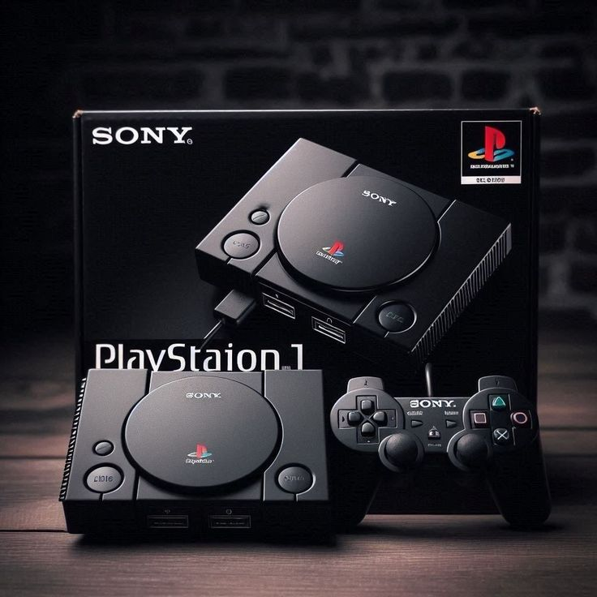
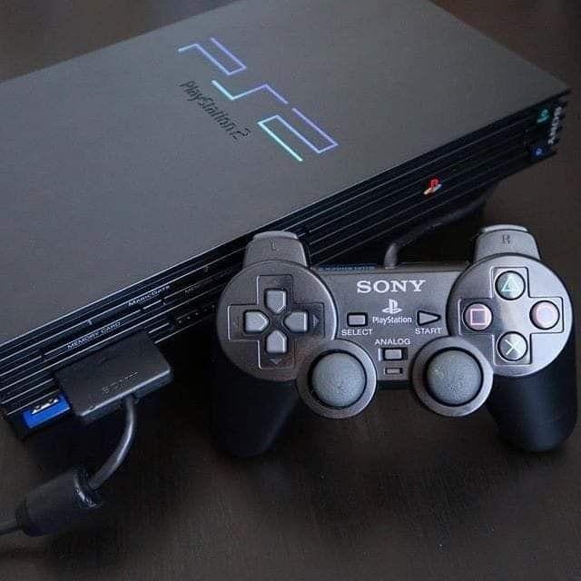
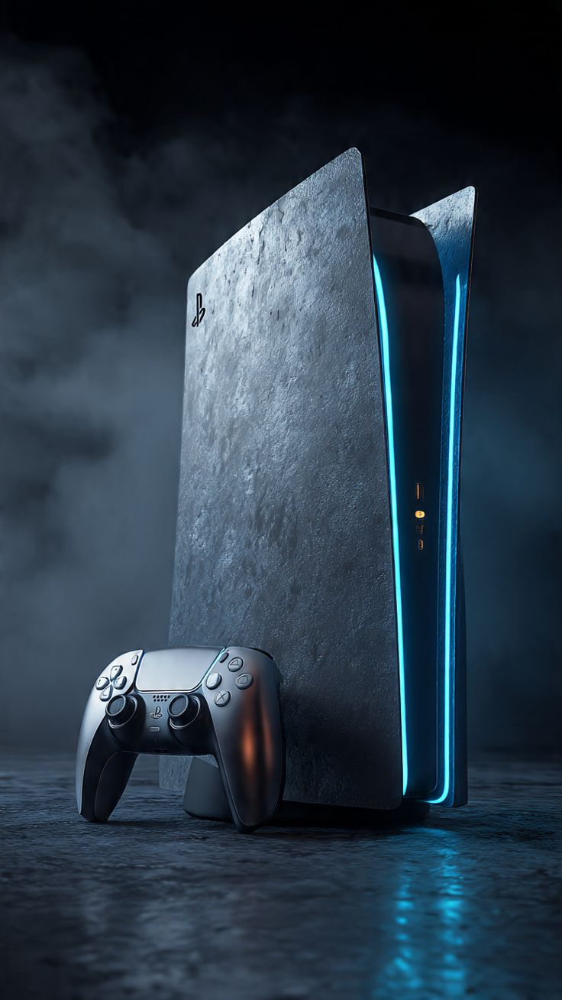
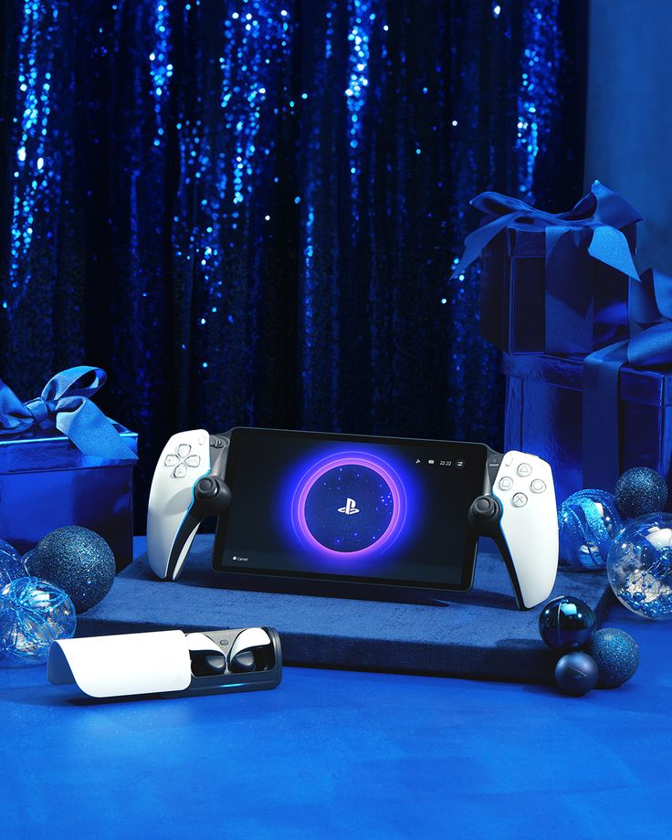

PlayStation 1 (1994)
O console que mudou a indústria ao trocar cartuchos por CDs. Ele permitiu que desenvolvedores criassem mundos 3D mais complexos e trilhas sonoras com qualidade de cinema. Foi a casa de clássicos como Resident Evil, Metal Gear Solid e Crash Bandicoot.

PlayStation 2 (2000)
Até hoje o console mais vendido da história. Ele foi essencial para popularizar o formato DVD e trouxe uma biblioteca gigantesca. Marcou época com títulos como God of War, GTA San Andreas e Shadow of the Colossus.
PlayStation 3 (2006)
Introduziu o processador Cell e a tecnologia Blu-ray. Foi o nascimento da PlayStation Network (PSN) e de franquias que focam em narrativas profundas, como Uncharted e The Last of Us.
PlayStation 4 (2013)
Com foco total no jogador e na conectividade social, o PS4 consolidou a Sony com exclusivos de peso e um hardware muito equilibrado. Destaques para Bloodborne, Horizon Zero Dawn e Marvel's Spider-Man.

PlayStation 5 (2020)
A nova era com carregamento instantâneo via SSD ultra-rápido. O controle DualSense trouxe uma imersão inédita através do feedback tátil e gatilhos adaptáveis. Jogos principais: Spider-Man 2 e Demon's Souls.

PlayStation Portal
Um acessório de reprodução remota que permite levar a experiência do seu PS5 para qualquer lugar da casa via Wi-Fi, mantendo toda a tecnologia do controle na palma da sua mão.